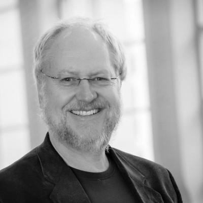
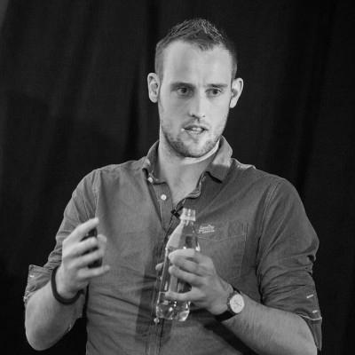
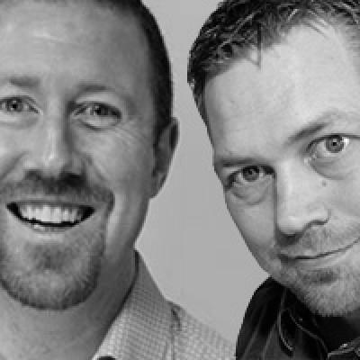

08:00 - 09:00 Registrering
09:00 - 09:10 Intro
| Sal 1 | Intro - Selda Ekiz |
|---|
Selda Ekiz er kjent fra NRKs Newton og Barn Ingen Adgang og har en mastergrad i Fysikk fra UiB. Med andre ord har hun et diplom på “nerd”. Hun elsker internett og mener at verden hadde vært et mye bedre sted om folk hadde virkelig utnyttet nettet for det den er lagd for: spre kunnskap
09:10 - 10:00 Keynote
| Sal 1 | The better parts (EN) - Douglas Crockford |
|---|
This talk is about using programming languages more effectively, and using that experience to create and select better programming languages. There are bad practices in software development that are so old and well established that it is difficult to recognize the problems they cause. There will be a review of the new good parts in ES6. JSON will also be mentioned.
Doulas Crockford is a senior JavaScript Architect and well known for introducing and maintaining JSON format. He’s a well known presenter and author of several books. He’s a former chief architect at Yahoo and now at PayPal. Check out his homepage for more information.
10:00 - 10:15 Pause
10:15 - 10:45
| Sal 1 | Challenges and opportunities in the changing digital landscape - Stefania Montagna |
|---|---|
| Sal 2 | Introduction to bluetooth low energy – Overview and radio (EN)(1/2) - Carles Cufi |
| Sal 3 | Among the sleep, En drøm blir virkelig - Adrian Tingstad Husby |
| Sal 4 | Managing CSS projects with ITCSS (EN) - Harry Roberts |
| Sal 5 | The lower cog challenge (EN)(1/2) - Niall Merrigan and Glenn F. Henriksen |
The changing digital landscapes challenges developers to think differently. Audience fragmentation, the increasing use of digital technologies beyond the screen and the high level of competition in the digital landscape offers tremendous opportunities and also relevant challenges to anyone trying to make it in this space. The talk will explore how Google is looking to support developers, both technically and from a business perspective, in their strive to develop for the world of tomorrow.
Stefania Montagna is a Strategic Partner Manager in Google’s Online Partnership Group, focusing on the Nordics. Stefaniaspecializes in sales of revenue-generating solutions for publishers and app developers. She has previously contributed to maintaining the Google Blog “Inside AdWords” for Norway, and has organized several Google events in Norway and Sweden.
The presentation will focus on the basics of Bluetooth Low Energy, including a brief overview of the radio, a concise description of all layers in the protocol stack and their inner workings as well as current applications and development platforms offered by my Norwegian employer and IC design company Nordic Semiconductor.
Starting at Parrot in Paris with version 1.0 of the Bluetooth specification, I wrote one of the first protocol stacks to be shipped on a commercial product, and have been involved with the development and implementation of Bluetooth devices and systems ever since. I am currently employed by Nordic Semiconductor, where I am responsible for the APIs offered by the protocol stack on the nRF51 series.
Våren 2011 leverte en gjeng studenter bacheloroppgaven sin ‘Among the Sleep’. Den lille prototypen av et dataspill hadde allerede da motatt støtte for vidreutvikling, men ingen av studentene ante egentlig hva de begikk seg ut på. Etter tre år ble spillet til sist ble gitt ut 29. mai i år. Blant annet The Guardian og New York Times har siden delt sin entusiasme rundt spillet. Hvordan tok det form?
Adrian er ‘potet’ og alt-mulig-mann i Krillbite Studio. Under utviklingen av Among the Sleep har han jobbet med alt fra markedsføring og spilldesign, til lyddesign og administrativt arbeid.
Harry is a Consultant Front-end Architect, designer, developer, writer and speaker from the UK. Previously a Senior Developer at BSkyB, he now helps tech teams all over the world build better products. He specialises in authoring and scaling large front-ends; he writes on the subjects of maintainability, architecture, performance, OOCSS and more at csswizardry.com; he is the lead and sole developer of inuitcss, a powerful, scalable, Sass-based, BEM, OOCSS framework; he Tweets at @csswizardry.
This isn’t a cage match, this is a TopGear style challenge between the old dog and the not so old dog. In this session, Niall will defend WebForms while Glenn shouts about MVC and they will show how the two fare in a set of grueling technical challenges… Expect the two presenters to trade insults while trying to show the technical superiority of their chosen stack.
Niall is the Head of Custom Software Development in Capgemini Stavanger,He is also a Microsoft ASP.NET MVP, and general rugby nut (which means he shouts a lot). He has a passion for web technologies, security and whiskey which can lead to some interesting discussions. He can be found on twitter as @nmerrigan and hosts a blog at certsandprogs.com
Glenn F. Henriksen har byttet kode mot mat i ca 15 år og for tiden jobber han som mentor, evangelist og utvikler hos Capgemini Stavanger. Her får han sjangsen til å utforske nye verktøy, prosesser og teknologi og å stadig forbedre måten han og hans kollegaer jobber med kode, oppgaver og prosjekter. Han er levende opptatt av kunnskapsformidling og har blitt utpekt som ASP.NET MVP av Microsoft.
10:45 - 11:00 Pause
11:00 - 11:30
Du har kanskje hørt om AngularJS? Du tenkte kanskje også “Herregud, ikke enda et JavaScript-rammeverk”. Da er denne talken noe for deg. I løpet av 30 minutter skal vi demonstrere de egenskapene og funksjonene som gjør rammeverket så populært.
Lokal fersk systemutvikler som har oppholdt seg for det meste i .NET verden de siste to årene. Er over gjennomsnittet interessert i design, prototyping og front-end utvikling. Liker å utforske ny teknologi og fortelle kolleger om dem.
The presentation will focus on the basics of Bluetooth Low Energy, including a brief overview of the radio, a concise description of all layers in the protocol stack and their inner workings as well as current applications and development platforms offered by my Norwegian employer and IC design company Nordic Semiconductor.
Starting at Parrot in Paris with version 1.0 of the Bluetooth specification, I wrote one of the first protocol stacks to be shipped on a commercial product, and have been involved with the development and implementation of Bluetooth devices and systems ever since. I am currently employed by Nordic Semiconductor, where I am responsible for the APIs offered by the protocol stack on the nRF51 series.
Chris Heilmann has dedicated a lot of his time making the web better. Originally coming from a radio journalism background, he built his first web site from scratch around 1997 and spent the following years working on lots of large, international web sites. He then spent a few years in Yahoo building products and explaining and training people and is now at Mozilla. Chris wrote and contributed to six books on web development and wrote many articles and hundreds of blog posts.
Hva er det som skjer når man plasserer forskjellige individer i en gruppen sammen for å utvikle IT-løsninger? Har vi glemt at et team består av individer, når vi forsøker å bruke metodikk og verktøy for å få et dysfunksjonelt team til å prestere bedre? Hvordan kan man skape et bedre og mer positivt utviklingsmiljø?
Med over 16 års erfaring med systemutvikling, har jeg begynt å få en forståelse for hva som fungerer bra og dårlig med utviklingsteam. Erfaring fra mange store og små prosjekter i Norge og utlandet, jobber som konsulent i Kristiansand for Deepmind.
Niall is the Head of Custom Software Development in Capgemini Stavanger,He is also a Microsoft ASP.NET MVP, and general rugby nut (which means he shouts a lot). He has a passion for web technologies, security and whiskey which can lead to some interesting discussions. He can be found on twitter as @nmerrigan and hosts a blog at certsandprogs.com
Glenn F. Henriksen har byttet kode mot mat i ca 15 år og for tiden jobber han som mentor, evangelist og utvikler hos Capgemini Stavanger. Her får han sjangsen til å utforske nye verktøy, prosesser og teknologi og å stadig forbedre måten han og hans kollegaer jobber med kode, oppgaver og prosjekter. Han er levende opptatt av kunnskapsformidling og har blitt utpekt som ASP.NET MVP av Microsoft.
11:30 - 11:45 Pause
11:45 - 12:15
How do we utilize sensor and user data to create experiences in the digital world? We all know that smart devices have sensors, but how can we use this as a resource to acquire information about the user and his environment? And how can we use this information to design a better user experience that is both unobtrusive and transparent? The simple answer: we create adaptive systems.
Avi (@xgmedia) is a longtime interactive and web design professional with thirteen years of experience. He is an avid enthusiast of technology and is often invited to speak about emerging design and UX trends. Avi is currently working as an Independent UI/UX Consultant at his studio, XG Media and is the Founder of UX Salon (@uxsalon), an international UX Design conference in Tel-Aviv.
De er overalt, de er magiske og deres kunnskap kan hjelpe deg å skille deg ut fra mengden. De er også raske og kan spare deg for mye unødvendig knot. Ønsker du å forstå dem, og lære å bruke dem riktig? Har du lyst til å beseire monstre som etterlater spor [stacktraces] i loggfilene dine, eller ønsker du å kunne takle navnekonvensjoner i koden din bedre? Kanskje vil du bare bedre forstå besvergelser som har blitt skrevet av andre?
I dette foredraget vil vi ta et dypere dykk inn i regulære uttrykk, deres bruk og ikke minst ta en titt på noen praktiske eksempler. Vi vil starte med en kort introduksjon til den mystiske verden av regulære uttrykk og friske opp våre kunnskaper om disse før vi fortsetter videre til mer avanserte emner som grupper, greed og backtracking. Interaktiv presentasjon med masse demoer.
Rustam Mehmandarov har en mastergrad fra Institutt for Informatikk, UiO. Han har over 8 års erfaring som utvikler, teknisk prosjektleder og leveranseansvarlig i både store og små prosjekter. Han har interesse for smidig utvikling, webutvikling, arkitektur og geografiske informasjonssystemer. Han er også en guru på både Linux og Windows. På fritiden er han veldig glad i å trene, når han ikke sitter og koder i Python eller Java. Han snakker også ofte på forskjellige konferanser som JavaZone, NDC, Boosterconf og diverse faglige events på universiteter over hele Norge.
Jakten på det perfekte systemet ender ofte opp med noe midt i mellom. Løsninger tilpasset hvert enkelt fagområde, som dekker alle behov og gjør alle fornøyde, men ikke laget for å samarbeide. Så hva er det midt i mellom som gjør at ting allikevel ser ut til å fungere? Folk! Manuell aktivitet mellom systemer kan og BØR automatiseres. Få et innblikk i hvorfor og hvordan papirflytterne kan avløses.
Anita jakter på de løsningene som gir mest tilbake til brukerne. Brukerne skal aldri føle seg motarbeidet når de bruker sine arbeidsverktøy. Hvis behovene ikke er støttet så er heller ikke systemet ferdig. Forenkling og digitalisering er hennes daglige visjon. Som programmerer og systemutvikler har Anita beveget seg fra Java til .NET og inn i en verden med C#, WCF og BizTalk.
Bluetooth Low energy is one of the key technologies enabling IoT. A key difference between Bluetooth and other wireless standards is that it even defines application uses-cases (as adapted profiles). In this session we will look at the new Bluetooth Low energy API’s in Android L and learn how to use them to implement these adopted profiles as well as other gotchas with the API.
Vegar Westerlund is an embedded tester and developer working for Conceptos Consulting in Trondheim. He has developed on embedded Linux, done testing for ESA on Galileo (satellite navigation system) and is currently working for Nordic Semiconductor with Bluetooth low energy on their ARM based nRF51 series. He is also active in the Meetup community here in Trondheim and an organiser for XP meetup.
Smidige metoder har ført til at systemutvikling gjennomføres i små, selvstyrte team. Vi finner mange råd om hvordan arbeidet bør gjennomføres i smidige metoder, men hvordan rimer disse rådene med forskning på teamarbeid fra andre felt? I dette foredraget vil jeg vise en modell for teameffektivitet, hvilke faktorer scrum setter fokus på, og hva et team bør jobbe med i tillegg.
Torgeir arbeider med prosessforbedring og kunnskapsforvaltning i programvarebedrifter som seniorforsker i SINTEF. Spesielt har han fokusert på smidige utviklingsmetoder, teamarbeid i systemutvikling og bruk av intranettverktøy for læring mellom prosjekter. Han er medforfatter på boka “Praktisk prosessforbedring – en håndbok for IT-bedrifter” på Fagbokforlaget.
12:15 - 13:15 Lunsj